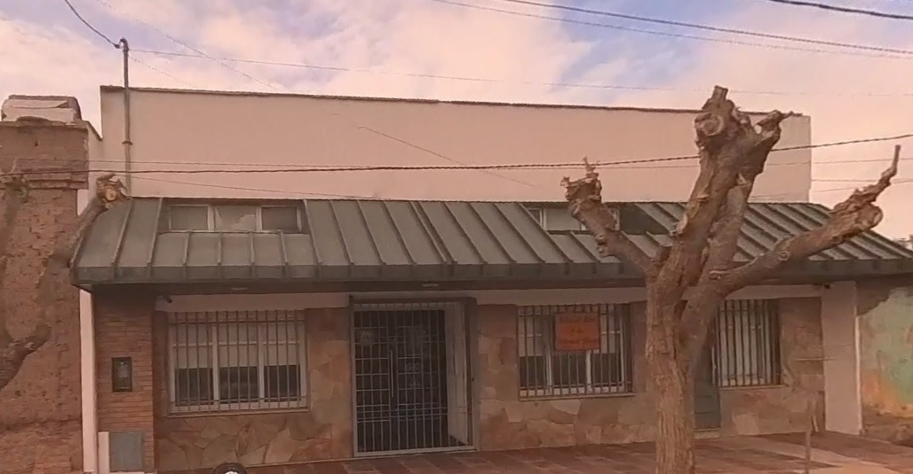

Activar/Desactivar mi ubicación


Si sos un publicador, este mapa en línea te permitirá:
Ubicar un territorio con la opción de hacerlo a partir de tu ubicación en tiempo real.
Es decir, si vos se lo autorizás, te trazará una ruta con las indicaciones necesarias para llegar...!!!. Te incluirá una distancia y demora estimadas y hasta te avisará con voz cuando hayás llegado...!!!
Por otra parte, si sos el viajante, además podrás:
Localizar las casas y los puntos donde puedas tener tus arreglos para almuerzos, pastoreos y actividad.
En la barra lateral podrás encontrar secciones con las herramientas disponibles y un apartado de ayuda para orientarte a encontrarlas y saber su función.-